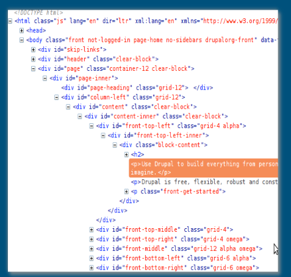

Lesson 12 : Semantic Elements
HTML Markup Validation
There exist several online services that validate HTML, CSS, and JavaScript code – check the code for errors, obsolete terms, and bad practices.
In this class we will use the W3C Markup Validation Service, at (https://validator.w3.org/)
The div tag
HTML4 introduced the <div> tag, which allowed web developers to create divisions, or sections to their pages. Web pages soon had many divs containing different types of content. While useful, overuse of div elements can make it difficult to understand how the page is structured.
Ex:
